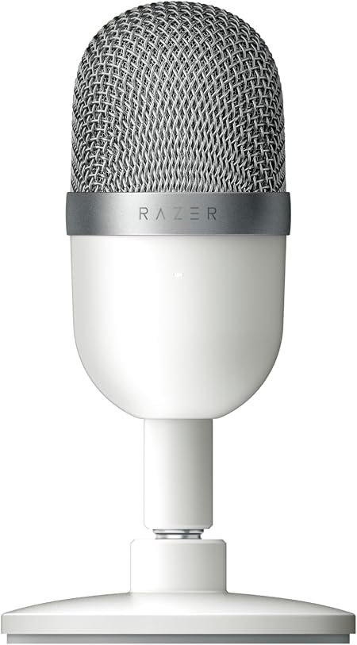

Liste des articles
Liste des articles
Razer Seiren Mini
Razer Seiren Mini Blanc : un microphone compact conçu pour des voix claires et naturelles.
Son design minimaliste et élégant s’intègre parfaitement à n’importe quel setup.
Idéal pour le gaming, le streaming, les appels et la création de contenu.
Profite d’une captation précise pour être clairement entendu à chaque instant.
Razer Seiren Mini : petit par la taille, grand par la qualité audio.
| Nom | image | prix |
| Razer seiren mini |  | 88€ |